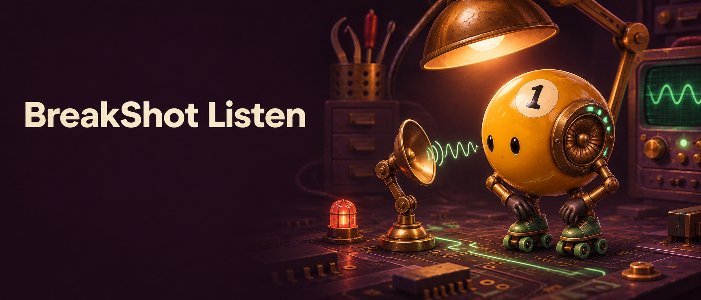

BreakShot Listen
A speech activity gate for waking a downstream system. Hear the audio used in the CPU pilot and see exactly where the recorded detector fired.

Listen to a wake test
Switch between clean synthesized speech, ambient sound, and speech mixed with equally loud background sound. The retail mix is the missed wake from the recorded CPU pilot.
Loading recorded wake events…
What was measured
The authored industry pilot matched 32 of 33 wake labels on CPU. A separate physical NCS1 experiment measured an earlier VAD graph at 3.89 ms p95 over 600 paired windows. The audio above shows the CPU pilot's recorded event timing.